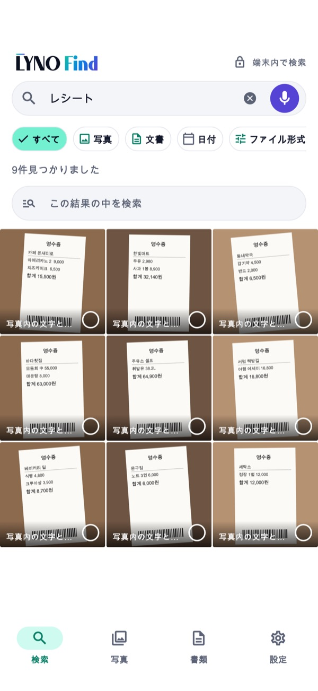

検索の精度を上げる方法
1. 探したい言葉だけを入れましょう
探したいものだけを入れるのが一番正確です。写真に写っているもの、写真の中の文字、書類の内容をまとめて探します。動画はまだ探しません。

例: 猫 レシート Wi-Fiのパスワード
2. フォルダ名で探す
オンにしたスマートフォルダの名前を入れると、そのフォルダの写真も結果の下に出ます。2〜3個をスペースで区切ると、すべてに入っている写真だけを表示します。
例: 犬 海 夕日
3. 複数の言葉はピリオドで区切る · 複数検索
ピリオド(.)やカンマ(,)で区切ると複数検索になります。すべてそろった写真を先に、一部だけの写真をその後に表示します。写真を大きく開くと、言葉ごとに見つかった場所の数を表示します。
スペースだけなら、その文のまま探します。書類の中の文言を探すときに便利です。
結果の上に、すべてそろった写真と言葉ごとの写真の数を表示します。スペースで区切って探して結果が少ないときは「別々に探す」ボタンが出ます。
まずスペース、いくつも探すならピリオド。スペースで区切ると（日本 海）すべてに当てはまる写真だけが残り、狭く正確に探せます。ピリオドで区切ると（犬。猫。海）言葉ごとに別々に探して一緒に表示し、すべてある写真が先に出ます。スペースで探して結果が少ないときは「別々に探す」を押してください。
例: 犬. 猫. 海
4. 話しかけるだけ · 音声検索
マイクを押して話すと、必要な言葉だけを選んで、一緒に写っている写真を先に探します。
iPhone · Siriアプリを開かなくても、Siriに「LYNO Findで探して」と話し、何を探すか聞かれたら「犬の写真」のように答えてください。写真だけを表示します。「契約の書類」は書類だけ、「犬」だけなら両方を探します。
LYNO Findで探して LYNO Findで検索してください LYNO Findで検索して LYNO Findで書類を探して
アプリのアイコンを長押しして「音声検索」をタップするか、ホーム画面ウィジェットのマイクをタップすると、すぐ声で探せます。
例: 海で猫と撮った写真を探して
5. 撮った場所・日付を一緒に入れましょう
探したいものと撮った場所を一緒に入れると、写真に保存された位置情報で、その場所で撮った写真の中だけを探します。「日本で撮った海の写真を探して」と話しかけてもOKです。いつ撮ったかも一緒に入れられます。
例: 日本 海 京都 自撮り 去年の夏 海 2026年10月 レシート
6. 結果の中をもう一度探しましょう
結果の上の「この結果の中を検索」に別の言葉を入れると、今の結果の中だけを探します。例:海を探して、その中で猫